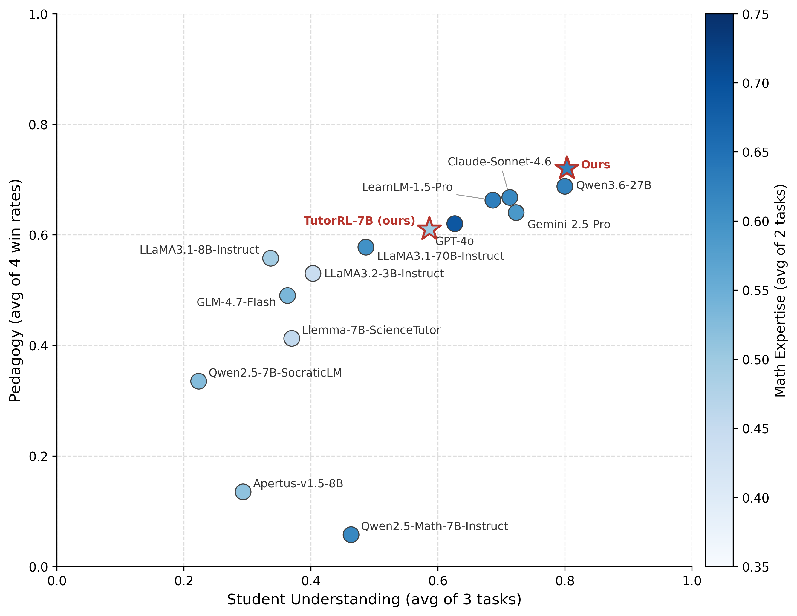
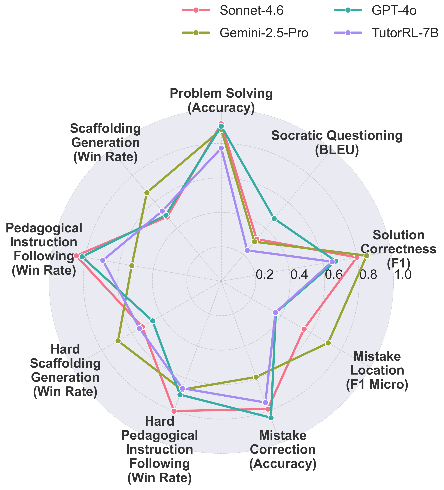

Click any column header to sort. The best score per column is highlighted. Win rates are computed by the
pedagogical reward model
against ground-truth teacher responses.
Model
Problem Solving
Socratic Questioning
Solution Correctness
Mistake Location
Mistake Correction
Scaffolding Win Rate
Pedagogy IF Win Rate
Scaffolding (Hard)
Pedagogy IF (Hard)
Problem Solving: accuracy · Socratic Questioning: BLEU · Solution Correctness: F1 ·
Mistake Location: micro-F1 · Mistake Correction: accuracy · remaining columns: reward-model win rate.
Models marked NEW were added after the paper's release.
All models are evaluated with thinking/reasoning disabled
(is_thinking option). The only exception is google/gemini-2.5-pro, which uses its
default adaptive thinking (thinking budget set to -1).
Findings
Problem Solving ≠ Good Tutoring
Three skills, one picture
Averaging the benchmark subtasks into the three high-level teacher skills — Math Expertise
(problem solving, socratic questioning), Student Understanding (solution correctness, mistake
location, mistake correction) and Pedagogy (the four win rates) — shows that strong problem
solvers are not automatically strong tutors. Specialized math models sit far below the
pedagogy frontier, while tutoring-tuned models trade some math expertise for better scaffolding.

Each point is one model; color encodes Math Expertise (darker = stronger).
Red-edged stars mark our models.
Task-level comparison
The per-task radar view makes the trade-off concrete: models with near-identical problem-solving
accuracy can differ by 20+ points in scaffolding and pedagogical instruction-following win
rates, especially on the harder variants where the tutor must respond within a real dialog
context.

Regenerate both figures with python visualize.py --results_dir results/.
Benchmark
How MathTutorBench Works
MathTutorBench provides a unified framework for evaluating open-ended pedagogical
capabilities of large language model (LLM) tutors. Each task is annotated with teacher ground truth;
model outputs are scored automatically — via accuracy, F1 or BLEU where the task allows it, and via a
trained pedagogical reward model for open-ended scaffolding quality.
Automatic evaluation Run the benchmark automatically on any new model you are developing.
Comprehensive metrics Three high-level skills and seven tasks in the domain of math tutoring.
Teacher-grounded Each task is annotated with teacher ground truth and models are compared against it.
Fast execution loop Run the benchmark on different tasks very quickly, locally or via APIs.
Usage
Quick Start — Evaluate a New Model
0. Run your model locally using vllm (skip if using an API)
See the vllm documentation for details. Optionally add tensor parallelism for large models.
# Example with vllm model
python main.py --tasks mistake_location.yaml --provider completion_api --model_args base_url=http://localhost:8000/v1,model=meta-llama/Llama-3.2-3B-Instruct
# Example with OpenAI API
python main.py --tasks mistake_correction.yaml --provider completion_api --model_args model=gpt-4o-mini-2024-07-18,api_key=<API_KEY>,is_chat=True
# Example with OpenRouter (any OpenAI-compatible provider works)
python main.py --tasks problem_solving.yaml --provider completion_api --model_args base_url=https://openrouter.ai/api/v1/,api_key=sk-XX,model=anthropic/claude-sonnet-4.6 --output results/ --debug
💰 Cost estimate: running the full benchmark via OpenRouter costs
around $35 USD for non-reasoning models (e.g. Claude Sonnet 4.6) and can reach $100–200 USD for reasoning
models due to the additional reasoning tokens. Use --debug first to verify your setup on a
small subset.
Parameters
--tasks — task definition file(s) in the configs folder, comma-separated for multiple sequential tasks:
problem_solving.yaml, socratic_questioning.yaml, student_solution_correctness.yaml,
mistake_location.yaml, mistake_correction.yaml, scaffolding_generation.yaml,
pedagogy_following.yaml, scaffolding_generation_hard.yaml, pedagogy_following_hard.yaml.
Run the Pedagogical Ability tasks (mistake correction, scaffolding generation, pedagogy following and their hard variants) with is_chat=True.
base_url — API base URL; empty for OpenAI and Gemini.
model — model name; defaults to the first available model.
api_key — API key; empty for vllm models.
is_chat — use the Chat Completion API with a chat template. Default: False.
is_thinking — set to True for thinking/reasoning models (e.g. Qwen3) to disable thinking during generation. Default: False.
temperature (default 0.0), max_tokens (default 2048), max_retries (default 3).
--output — output directory for results (default results); --debug — run on a small subset.
2. Run the reward model for the Pedagogical Ability tasks
Computes win rates of generated teacher utterances over ground-truth teacher utterances. The model is small
(1.5B parameters); the full evaluation runs within ~10 minutes on a single GPU.
Open a new issue titled Leaderboard Submission: <Model Name>.
Provide the exact model name on the Hugging Face Hub, any specific code/arguments/settings needed to run it with vllm, and copy the results from your local run.
Add a new benchmark task
Open a new PR providing the task configuration in the configs folder and the task implementation in the tasks folder.
@inproceedings{macina-etal-2025-mathtutorbench,
title = "{M}ath{T}utor{B}ench: A Benchmark for Measuring Open-ended Pedagogical Capabilities of {LLM} Tutors",
author = "Macina, Jakub and Daheim, Nico and Hakimi, Ido and Kapur, Manu and Gurevych, Iryna and Sachan, Mrinmaya",
booktitle = "Proceedings of the 2025 Conference on Empirical Methods in Natural Language Processing",
month = nov,
year = "2025",
address = "Suzhou, China",
publisher = "Association for Computational Linguistics",
url = "https://aclanthology.org/2025.emnlp-main.11/",
doi = "10.18653/v1/2025.emnlp-main.11",
pages = "204--221",
}